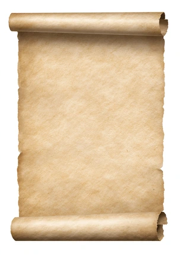

clique
clique

Scroll I
Deareſt Viſitor,
I bid thee warm Welcome to the County Bſnydeer. Here thou wilt find my
Creations in a Domain free of ſocialmedia. Revel in the firſt Clip of
the Week.
If anyone wants to draw a better scroll background for this I ſhall grant thee Abundance of His Majeſty's fineſt Gold.
Yours moſt humbly affectionate, benſnydeer
New Projects (2024)
BANKS, T.
Stone arrangement is in for 2024
Ongoing Development
synthsh
WordGraphs
Weekly highlight from the Archive
Favorites [collapsible]
Albums
Video games
TV shows
Films
Old Projects
Fishmas 2022 (2022)
What are we (2022)
C ground (2022)
This car drives me up the wall (2021)
Fall asleep to the sound of the sea (2021)
The 2018-2021 Midi Vault
The 2018-2021 Midi Vault Lost Tapes
The Instagram Story as Art
First Era Hits (2021–2023)
Second Era Hits (2023–)
All of it (2021–)
In Development...
K_2,n pretty
The Plot (v3)
The Real Peace In Your Heart
Vegas Vegas Casino Vegas Nights
Levenshteindle
What Ever Happened to Bensnydeer?
End of an Era
Blog
Aligning myself with nature
The Black Eyed Peas Are the Greatest Band of All Time
Before I had a mental breakdown in 2021 and didn't really recover for a while. Getting a BPD diagnosis and therapy etc.
Formal Portfolio: Ben Snydware & Graphic Design
Show resume of stuff I made/for other people
Clarence Ward Art Library Collections Value Checker